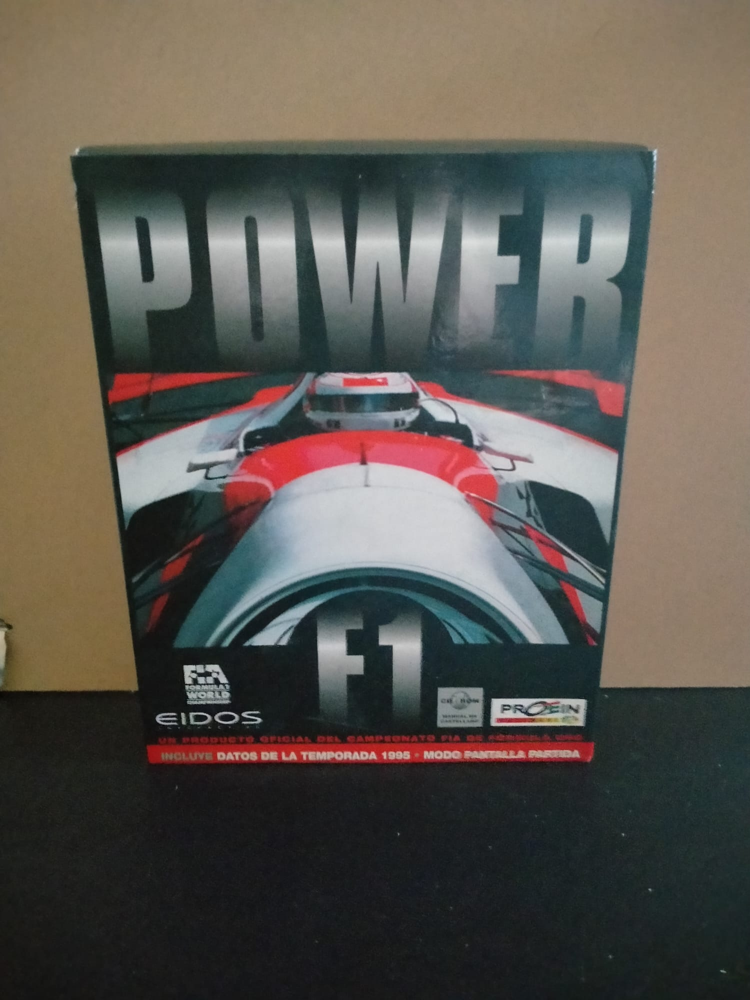

Ficha #000000
Power F1
Juego de carreras de Fórmula 1 con licencia oficial de la temporada 1996, lanzado en 1996 (Europa) y 1997 (EE. UU.). Incluye coches, pilotos y circuitos reales de la temporada, vista en primera y tercera persona, soporte para volante/joystick, multijugador LAN/IPX y pantalla partida para dos jugadores.
- Formato
- Big Box
- Plataforma
- MsDos Win95 Win98
- Género
- Carreras Fórmula 1 Simulación
- Serie
- Todos Big Box
- Desarrollador
- Teque London Ltd.
- Distribuidor
- Domark, Eidos Interactive
- EAN
- —
Contenido de la edición
- Pendiente de documentación.
Preservación
- Protección
- No determinado
- Formato recomendado
- No aplica
- Jugable en virtualización
- No determinado
Pendiente de documentación